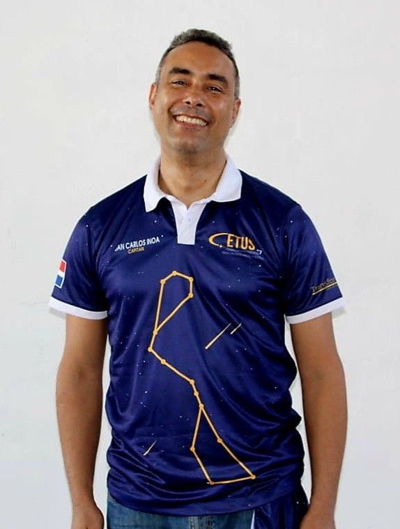
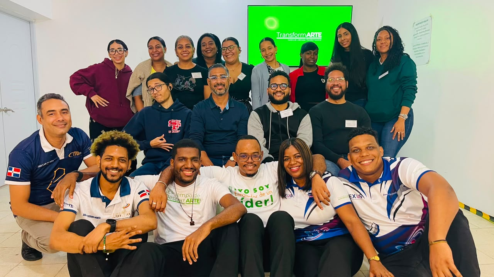
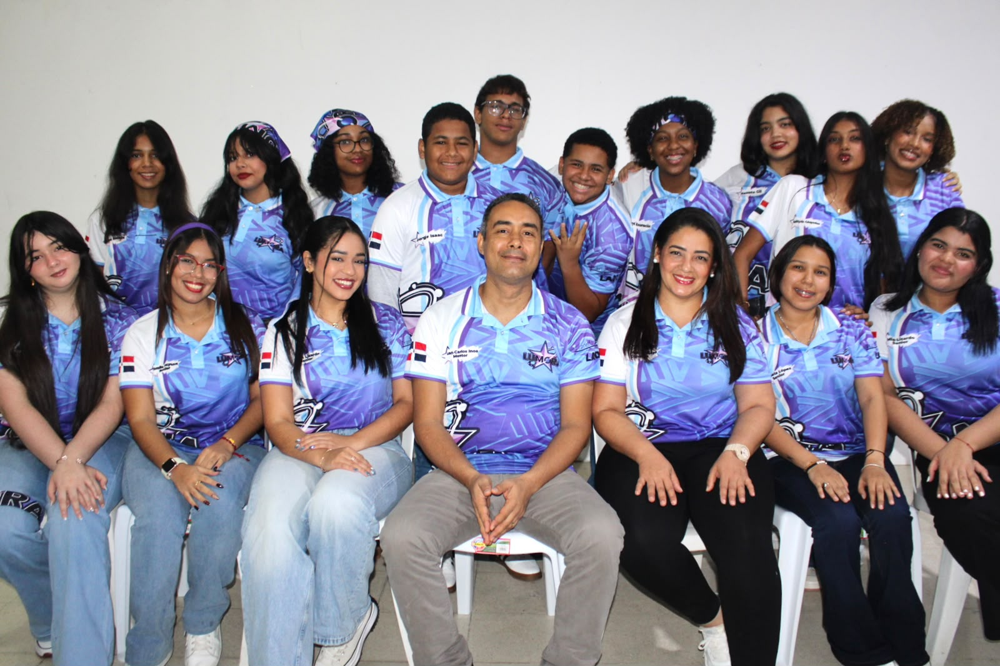
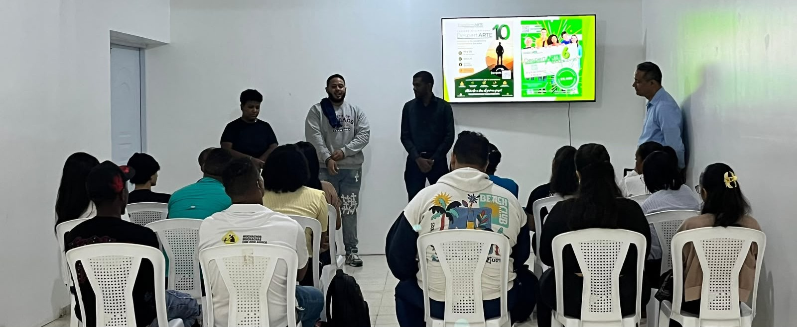
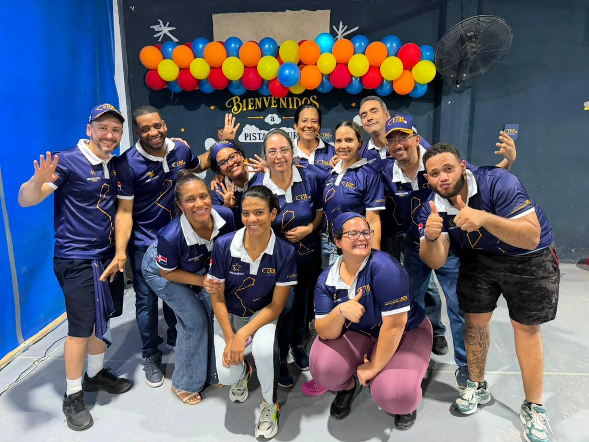
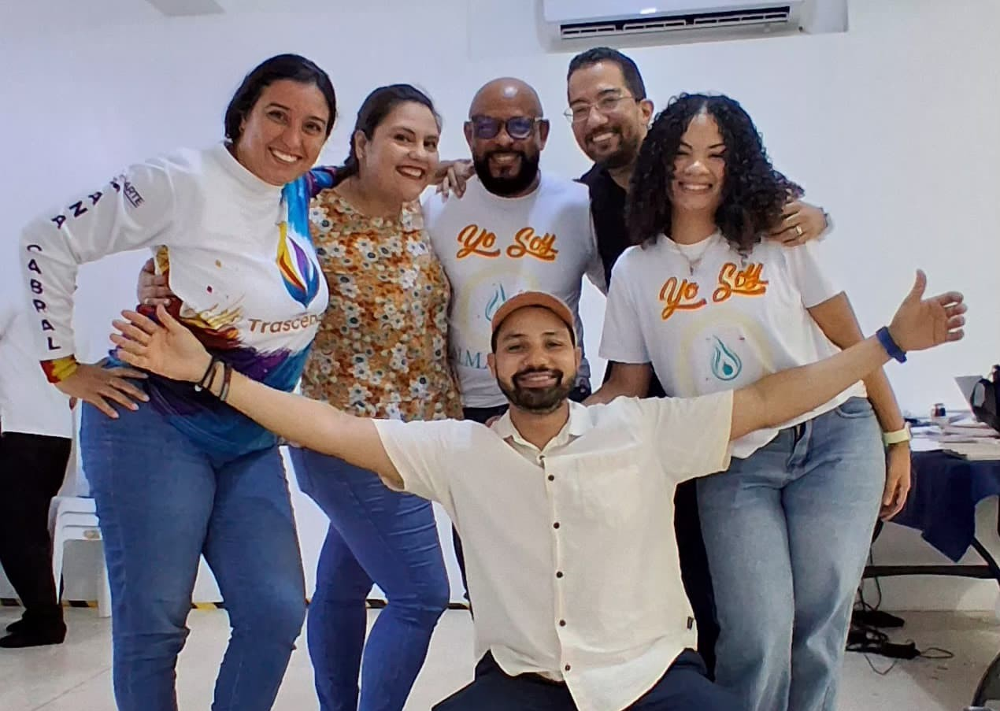
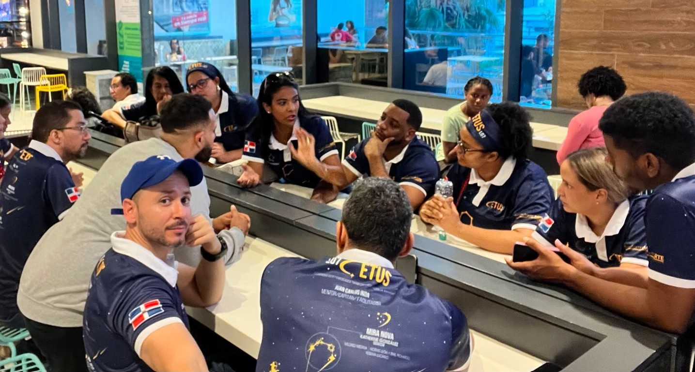
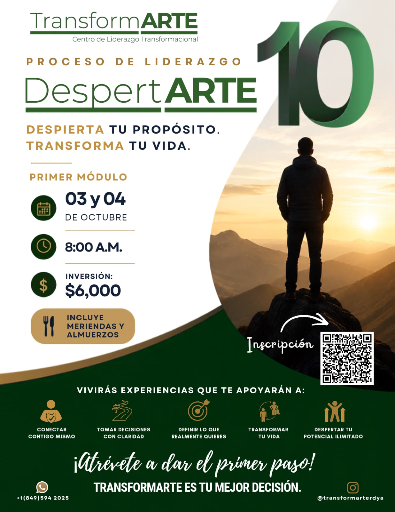
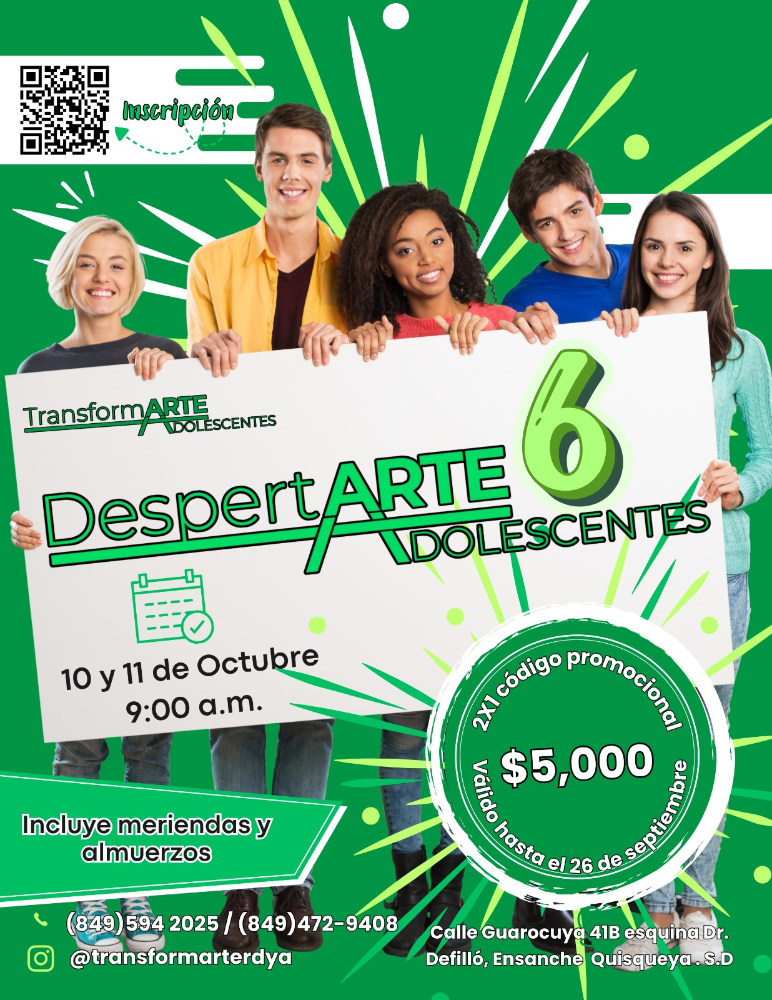
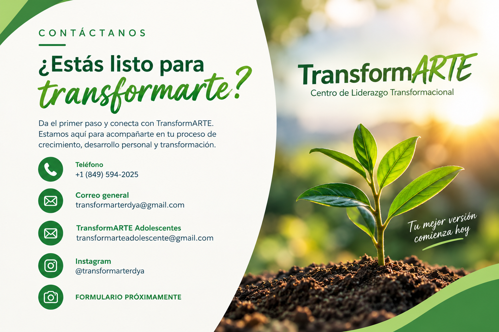

01
Inteligencia emocional
Comprender nuestras emociones y aprender a gestionarlas.

CENTRO DE LIDERAZGO TRANSFORMACIONAL
Un espacio para conectar contigo, desarrollar tu potencial y convertir tus posibilidades en acción.
SOBRE TRANSFORMARTE
TransformARTE nace desde una historia de transformación personal, liderazgo y servicio.
En 2014, Juan Carlos Inoa vivió una experiencia intensiva de transformación personal que marcó un antes y un después en su vida. A partir de ese momento decidió dedicar su experiencia y conocimiento al desarrollo de líderes y al crecimiento de las personas.
Desde entonces ha facilitado procesos de transformación personal y liderazgo para miles de personas, acompañándolas a descubrir su potencial, desarrollar nuevas posibilidades y construir una vida con mayor propósito.
En 2025 nace TransformARTE, un Centro de Liderazgo Transformacional dedicado al desarrollo de adultos y adolescentes.

Juan Carlos Inoa es facilitador de procesos de transformación personal, formador y emprendedor dominicano comprometido con el liderazgo y el desarrollo humano.
Nació el 27 de marzo de 1975 en Santiago de los Caballeros. Desde muy joven conoció el valor del trabajo, la disciplina y la responsabilidad. A los 12 años comenzó a trabajar para contribuir con su familia, después de que su padre sufriera un accidente laboral.
Durante su adolescencia combinó sus estudios, el trabajo y su formación en inglés. A los 14 años comenzó como asistente y posteriormente se convirtió en profesor de inglés. A los 18 años llegó a liderar personas que habían sido sus propios maestros.
Su camino también estuvo marcado por el emprendimiento. Desarrolló diferentes proyectos, fundó su propio instituto de inglés y lo dirigió durante 15 años. Estas experiencias, junto con sus éxitos y desafíos, fortalecieron su visión sobre el liderazgo, la toma de decisiones y la perseverancia.
En 2004 completó su formación universitaria en Mercadeo y, en 2006, participó en la expansión de un negocio internacional, experiencia que amplió su perspectiva sobre el desarrollo de equipos y el liderazgo.
En 2017 se trasladó a Santo Domingo, donde continuó desarrollándose profesionalmente en el ámbito educativo y de liderazgo.
Hoy, a través de TransformARTE, mantiene el compromiso de aprender, practicar y enseñar a otros, contribuyendo al desarrollo de líderes conscientes, al crecimiento humano y a la transformación de nuestra sociedad.
NUESTRO ENFOQUE
Comprender nuestras emociones y aprender a gestionarlas.
Reconocer quiénes somos, nuestros patrones y nuestro potencial.
Desarrollar visión, misión y propósito personal.
Convertir nuestras decisiones en acciones consistentes.
Practicar escucha activa, comunicación asertiva y conexión.
Empoderarnos para alcanzar nuestras metas declaradas.
NUESTROS PROGRAMAS

ADULTOS
Un proceso de transformación y desarrollo personal diseñado para acompañar a los adultos en el descubrimiento de su potencial, la renovación de sus posibilidades y el desarrollo de un liderazgo consciente.
2 etapas: DespertARTE + RenovARTE · LiderARTE
CONOCER EL PROCESO →
ADOLESCENTES
Un proceso de transformación diseñado para acompañar a los adolescentes en el descubrimiento de quiénes son, el desarrollo de su potencial y la construcción de nuevas posibilidades para su futuro.
2 etapas: DespertARTE + RenovARTE · LiderARTE
PROCESO DE LIDERAZGO ADULTOS
Un espacio de transformación personal y liderazgo diseñado para generar conciencia, romper patrones limitantes, desarrollar nuestro potencial y convertir lo aprendido en acciones que nos permitan crear una vida con mayor propósito.**
Un proceso de transformación que nos ayuda a despertar la conciencia, reconocer patrones que nos limitan, ampliar nuestras posibilidades y desarrollar nuestro potencial.
Una fase de liderazgo y acción que lleva lo aprendido a la práctica mediante talleres, experiencias y acompañamiento continuo.
TRANSFORMARTE ADOLESCENTES
Un proceso diseñado para acompañar a los adolescentes en su crecimiento personal, fortalecer su confianza, desarrollar su potencial y descubrir nuevas posibilidades.
Un proceso de transformación diseñado para que los adolescentes se conozcan mejor, reconozcan aquello que los limita, fortalezcan su confianza y descubran nuevas posibilidades para desarrollar su potencial.
Una etapa enfocada en llevar lo aprendido a la acción, fortaleciendo el liderazgo, la comunicación y las habilidades necesarias para desenvolverse con seguridad y generar un impacto positivo en su entorno.
UNA EXPERIENCIA PARA CRECER
DespertARTE busca crear un espacio donde los adolescentes puedan detenerse, conocerse, reflexionar y descubrir nuevas posibilidades para su crecimiento personal.
Reconoce tus emociones, pensamientos, comportamientos y aquello que influye en la manera en que te relacionas contigo mismo.
Desarrolla herramientas para comunicarte mejor, escuchar y construir relaciones más conscientes con las personas que forman parte de tu entorno.
Explora tu propósito, reconoce tus capacidades y comienza a visualizar nuevas posibilidades para tu futuro.
Lleva tus aprendizajes a la acción, desarrolla responsabilidad sobre tus decisiones y comienza a construir cambios conscientes.
NUESTRA OFERTA
El proceso de transformación permite desarrollar una mirada más consciente sobre nosotros mismos, nuestras decisiones y la manera en que nos relacionamos con nuestro entorno.
Identificar patrones limitantes y descubrir nuestra zona cómoda para desarrollar nuevas posibilidades de crecimiento.
Trabajar el valor propio y reconocer el poder que tenemos sobre nuestras elecciones, decisiones y acciones.
Aprender a cumplir nuestros compromisos, honrar nuestra palabra y asumir responsabilidad sobre nuestras decisiones.
Desarrollar una relación más honesta con nosotros mismos y reconocer nuestra propia humanidad.
Reconocer el poder de nuestra intención, declaración y determinación para avanzar hacia aquello que queremos.
Desarrollar claridad en cuanto a lo que queremos y tomar decisiones alineadas con nuestros objetivos.
Practicar una forma de relacionarnos basada en el principio ganar-ganar y en la creación de posibilidades para todos.
Llevar lo aprendido a la práctica y convertir la conciencia y las nuevas posibilidades en acciones concretas.
TRANSFORMARTE ADOLESCENTES
Si deseas conocer más sobre TransformARTE Adolescentes, déjanos tus datos y te compartiremos la información disponible sobre próximas ediciones, fechas y proceso de inscripción.
SOLICITAR INFORMACIÓNEXPERIENCIAS

EVENTO REALIZADO
Una noche para conocer, conectar y crecer.
📅 26 de febrero de 2026
🕐 8:00 p. m.
📍 Calle Guarocuya 41B, esquina Dr. Defilló, Ensanche Quisqueya, SD.
🎟️ Entrada GRATIS
VEN Y VIVE LA EXPERIENCIA.
NUESTRA EXPERIENCIA



HISTORIAS DE TRANSFORMACIÓN
Aquí aparecerán testimonios reales de participantes.

Completa nuestro formulario y cuéntanos cómo podemos acompañarte en tu proceso de crecimiento y transformación.
COMPLETAR INSCRIPCIÓN ADULTOS
Completa nuestro formulario y cuéntanos cómo podemos acompañarte en el proceso de crecimiento y transformación de tu adolescente.
COMPLETAR INSCRIPCIÓN ADOLESCENTESDA EL PRIMER PASO
Da el primer paso y conecta con TransformARTE. Estamos aquí para acompañarte en tu proceso de crecimiento, desarrollo personal y transformación.
